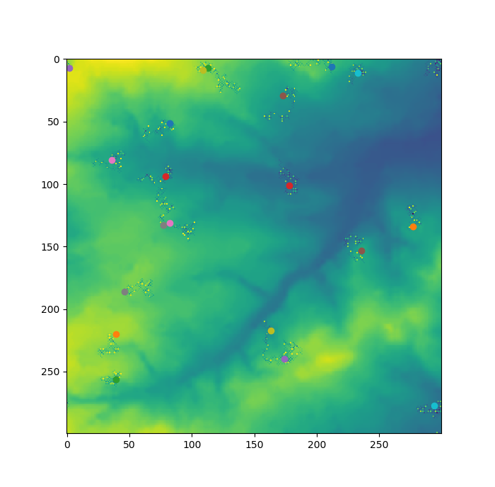

| Home | More about me | My projects |
|---|
Masters in Data Analytics and Society
Programming for social science (GEOG5995M)
Assessment 1 (Portfolio):
Follow the link to download code for a basic agent-based model (ABM) showing between agent and environmental interactions.
 |
Agents randomly start on a 300 x 00 grid and move randomly around the environment, eating it and putting it in their stores. |
| Agents interact with each other, sharing food with those in their vicinity. If they eat more than 100 units, they vomit their stores back into the environment. | |
| Graphics show agents moving about their environment and changes in the environment as the result of eating and vomiting. | |
|  |